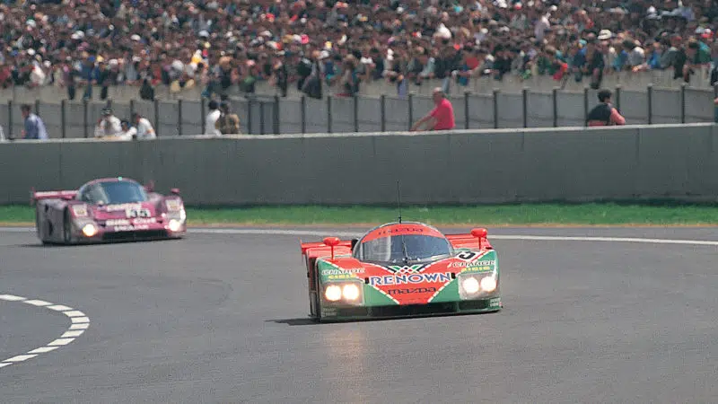
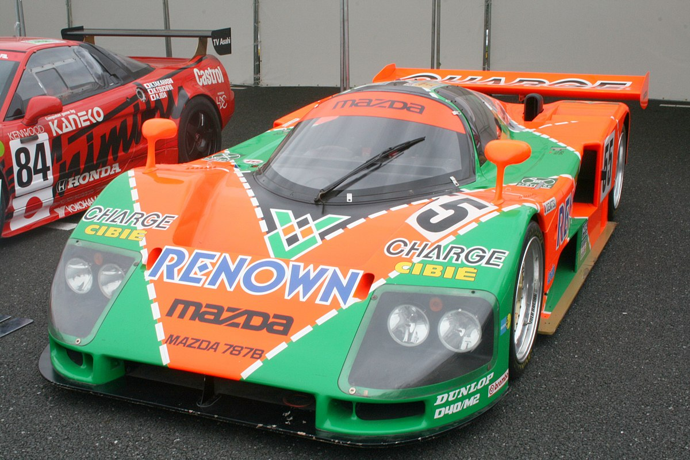
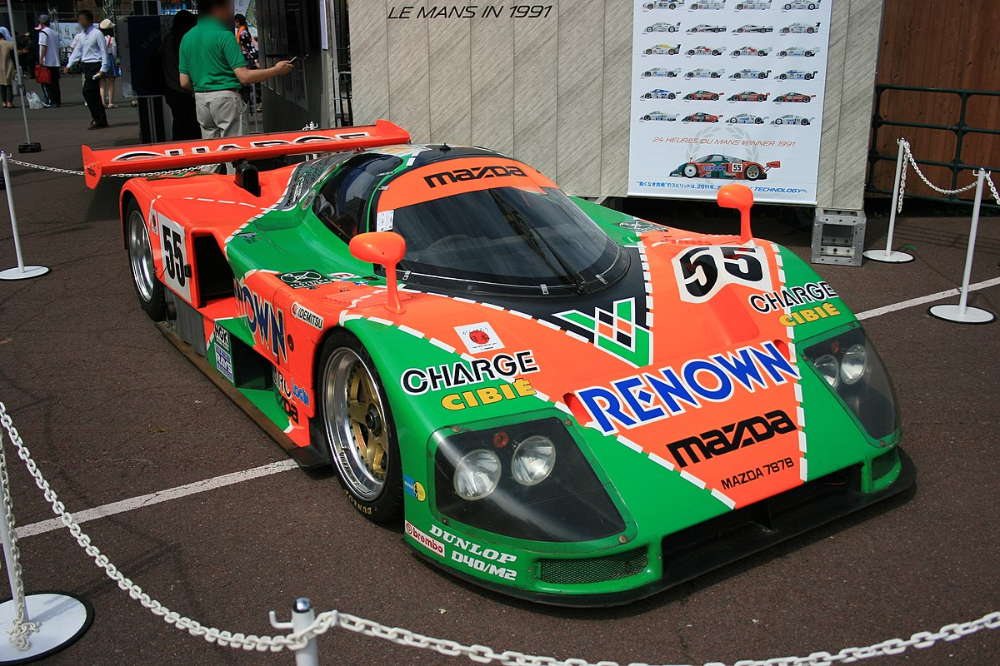
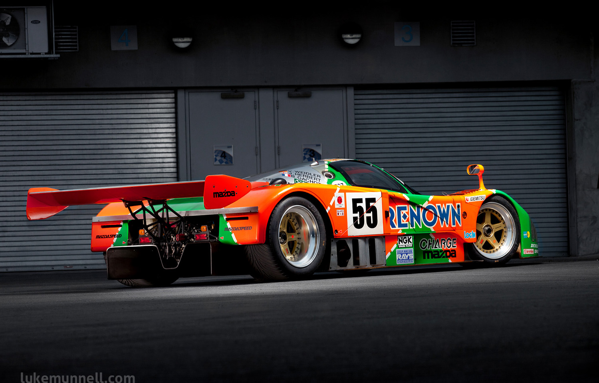
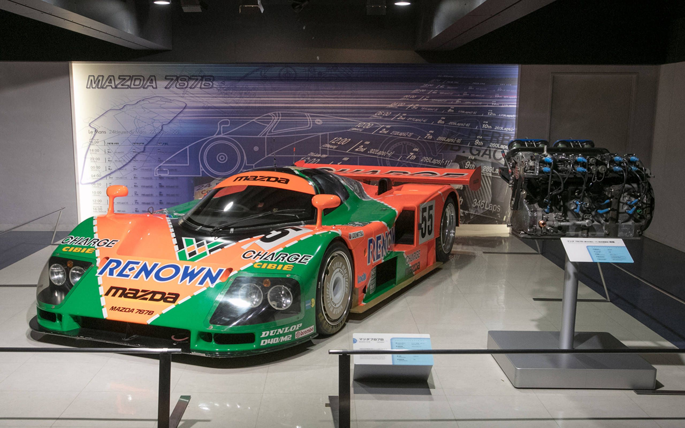

Mazda 787B
Kisah Kejayaan Mobil Balap Rotary yang Legendaris
Dibuat oleh: Aimar Moussa Priyatno 5A/IPI (11210251000103)

Mazda 787 dan turunannya, Mazda 787B, adalah mobil balap prototipe sports Group C yang dikembangkan oleh produsen otomotif Jepang, Mazda, untuk digunakan dalam Kejuaraan Dunia Mobil Sport (World Sportscar Championship), Kejuaraan Sports Prototype Jepang (All Japan Sports Prototype Championship), dan 24 Jam Le Mans dari tahun 1990 hingga 1991. Mobil-mobil ini dirancang untuk menggabungkan aturan Grup C dari Fédération Internationale du Sport Automobile (FISA) dengan aturan Grup GTP dari International Motor Sports Association (IMSA), dan mereka adalah mobil balap bermesin rotary Wankel terakhir yang bersaing di kejuaraan dunia dan Jepang, menggunakan mesin R26B buatan Mazda.
Meskipun Mazda 787 dan 787B tidak memiliki kecepatan satu putaran yang sebanding dengan pesaing Kejuaraan Dunia seperti Mercedes-Benz, Jaguar, dan Porsche, serta pesaing Kejuaraan Jepang seperti Nissan dan Toyota, mobil-mobil 787 ini memiliki keandalan yang memungkinkan mereka bersaing dalam kejuaraan masing-masing. Keandalan mobil ini akhirnya membayar pada tahun 1991 ketika Mazda 787B yang dikendarai oleh Johnny Herbert, Volker Weidler, dan Bertrand Gachot meraih kemenangan dalam 24 Jam Le Mans 1991. Hingga tahun 2023, ini tetap menjadi satu-satunya kemenangan oleh mobil yang tidak menggunakan desain mesin reciprocating. Ini adalah kemenangan pertama oleh produsen Jepang, dan satu-satunya kemenangan semacam itu hingga Toyota memenangkan 24 Jam Le Mans 2018.
Kemenangan Le Mans yang Bersejarah
Pada tahun 1991, Mazda 787B mencatat kemenangan bersejarah di ajang balap paling bergengsi, 24 Jam Le Mans. Dikendarai oleh Johnny Herbert, Volker Weidler, dan Bertrand Gachot, mobil ini memperlihatkan keandalan luar biasa sepanjang balapan, menghindari masalah teknis yang sering kali mempengaruhi pesaingnya. Mesin rotary R26B yang kuat membantu Mazda 787B mempertahankan posisi terdepan, dan pada jam terakhir balapan, mereka melintasi garis finis dengan selisih waktu yang nyaman dari pesaing terdekat. Kemenangan ini adalah yang pertama oleh mobil bermesin rotary, menjadikannya momen bersejarah dalam sejarah balap mobil, serta menjadi kemenangan pertama oleh produsen mobil Jepang di Le Mans. Kemenangan ini memperlihatkan bahwa inovasi dan tekad bisa mengatasi pesaing yang lebih mapan, dan hingga hari ini, kemenangan Mazda 787B tetap menjadi salah satu momen paling dihormati dalam dunia balap mobil.
*Berikut link cuplikan video saat Mazda 787B memenangkan 24 hour of Le Mans tahun 1991

Rancangan Teknologi dan Desain yang Canggih
Pada tahun 1991, Mazda 787B memamerkan desain yang inovatif dan efisien untuk menghadapi tantangan balap Le Mans. Mobil ini merupakan evolusi dari model 767 dan 767B yang digunakan Mazda pada tahun 1988 dan 1989. Mobil ini dirancang dengan cermat oleh Nigel Stroud, dengan perubahan signifikan yang membuatnya tampil lebih unggul. Salah satu perubahan utama adalah penggantian mesin rotary 13J yang lama dengan mesin baru R26B. Mesin R26B memiliki desain yang lebih canggih, termasuk intake variabel yang lebih halus, tiga busi per rotor, dan segel apex keramik. Ini memberikan tenaga maksimum sekitar 900 hp, yang kemudian dibatasi menjadi 700 hp untuk mempertahankan daya tahan selama balapan Le Mans tahun 1991. Mobil ini juga memiliki transmisi lima percepatan buatan Porsche dan sistem pendinginan yang ditempatkan di bagian hidung mobil untuk meningkatkan downforce. Selain itu, perubahan lokasi radiator juga memungkinkan desain bodywork yang lebih aerodinamis. Seluruh rangka mobil ini terbuat dari bahan komposit karbon dan kevlar yang ringan namun kuat. Perubahan-perubahan ini membuat Mazda 787B menjadi mobil yang handal, efisien, dan mampu bersaing di ajang balap Le Mans.
 
Sebelum Le Mans
Sebelum kemenangan epiknya di Le Mans pada tahun 1991, Mazda 787B telah melalui perjalanan luar biasa di dunia balap. Mobil ini adalah salah satu peserta kategori Grup C, yang pada masanya dikenal sebagai salah satu kelas balap paling kompetitif. Keunggulan utama dari Mazda 787B adalah penggunaan mesin R26B yang kuat, sebuah inovasi besar dalam dunia mesin rotary.
Sebelum mengaspal di Le Mans, Mazda 787B menghadapi uji coba yang intensif. Tim teknis bekerja keras untuk memastikan kinerjanya optimal di lintasan. Berbagai perubahan teknis dan penyesuaian dilakukan untuk meningkatkan keandalan dan efisiensinya, sebuah langkah yang krusial dalam persiapan menuju kemenangan besar. Tak hanya itu, Mazda 787B juga telah berpartisipasi dalam beberapa edisi balap Le Mans sebelum tahun 1991, meskipun belum pernah meraih kemenangan. Partisipasi sebelumnya memberikan pengalaman berharga yang membantu tim memahami persaingan dan menginspirasi mereka untuk terus mengembangkan mobil. Selain dedikasi tim, dukungan penuh dari Mazda Japan juga menjadi pilar keberhasilan Mazda 787B. Dukungan ini memungkinkan tim untuk terus berinovasi dan meningkatkan kinerja mobil mereka. Kisah Mazda 787B sebelum kemenangannya di Le Mans adalah cerita tentang ketekunan, inovasi, dan dedikasi dalam dunia balap mobil yang sangat kompetitif. Semua pengalaman dan perubahan yang telah dilakukan sebelumnya menjadi faktor penentu dalam kemenangan bersejarah mereka di balap Le Mans tahun 1991. Keberhasilan ini tidak hanya mencatatkan namanya dalam sejarah balap, tetapi juga menegaskan Mazda sebagai pemain kuat dalam dunia balap otomotif.

Setelah Le Mans
Setelah kemenangan bersejarahnya di ajang Le Mans pada tahun 1991, Mazda 787B menjadi buah bibir di seluruh dunia balap mobil. Prestasi gemilang ini menggambarkan kisah sukses sebuah tim yang tak kenal lelah, sebuah mesin rotary yang luar biasa, dan dedikasi tanpa batas dalam dunia kompetisi.
Setelah mengecap kejayaan di sirkuit Le Mans, Mazda memutuskan untuk tidak lagi berpartisipasi secara resmi dalam balap Le Mans. Kemenangan ini bisa dianggap sebagai puncak karir Mazda dalam balap ketahanan, dan meskipun memungkinkan bagi mereka untuk mencoba mempertahankan gelar, keputusan untuk tidak melanjutkan kompetisi Le Mans secara aktif telah diambil. Mesin R26B yang kuat yang digunakan dalam Mazda 787B menjadi legenda dan ikon bagi Mazda, mengukuhkan posisi teknologi rotary dalam sejarah otomotif perusahaan ini. Meskipun tidak lagi bersaing di Le Mans, warisan kemenangan Mazda 787B terus mempesona pecinta otomotif, dan replika mobil ini bahkan ditempatkan di Mazda Museum di Jepang sebagai penghormatan atas prestasinya yang luar biasa. Kemenangan ini tetap menjadi salah satu momen paling mengesankan dalam sejarah balap mobil, mengukir namanya dalam emas dalam buku-buku sejarah otomotif dunia.
